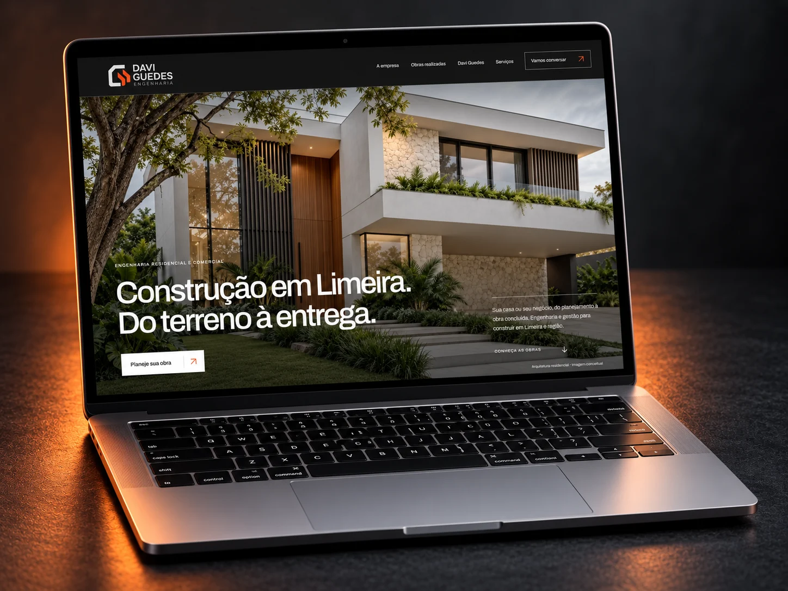

Estratégia
Pesquisa, direcionamento e plataforma de marca para organizar posicionamento e escolhas.
Estratégia · Identidade · Expressão
Antes de escolher uma cor, precisamos entender o que torna o seu negócio único. A partir daí, damos forma e voz a uma marca que faz sentido para você — e para quem você quer alcançar.
Quero criar minha marca Conheça o nosso processoDe Limeira para onde a sua marca precisar chegar.

O seu negócio como ponto de partida
Uma empresa tem história, jeito de atender, escolhas e ambições. A criação da marca conecta tudo isso a uma apresentação que as pessoas conseguem reconhecer.
Na Bādon, a conversa é próxima. Entendemos o momento do negócio antes de propor caminhos. Não é vestir sua empresa com uma tendência: é encontrar uma expressão que pertença a ela.
Estratégia de marca
Quatro perguntas abrem caminhos para decisões mais conscientes. Explore cada uma.
A etapa de estratégia pode ser aprofundada conforme o escopo do projeto.
O que você entrega, como trabalha e onde quer chegar. Uma marca precisa acompanhar o momento da empresa e a direção do seu crescimento.
Entender as pessoas, seus desafios e suas expectativas ajuda a criar uma comunicação que faça sentido para quem você quer alcançar.
Encontramos os diferenciais que podem ser sustentados na prática. A promessa da marca precisa corresponder à experiência que você entrega.
Origem, escolhas e propósito ajudam a construir uma narrativa com verdade. Sem inventar uma empresa que não existe.
O nosso processo
Um caminho com escuta, direção e decisões compartilhadas. Abra as etapas para entender como trabalhamos.
Estratégia e identidade verbal são etapas opcionais. As entregas e os ajustes são definidos na proposta.
Conhecemos a origem do negócio, seus objetivos, os desafios, o que você oferece e para quem. Também olhamos para o mercado e para a percepção que você quer construir.
Um ponto de partida conectado à sua realidade.
Exploramos negócio, público, proposta de valor e história. Organizamos essas descobertas em diretrizes para orientar as decisões da marca.
Clareza sobre quem somos, para quem existimos e por que fazemos diferença.
Definimos como a empresa conversa: tom de voz, estilo, vocabulário e mensagens. A maneira de falar também faz parte da experiência.
Orientações para a marca se expressar com consistência.
Criamos o sistema visual: assinatura, símbolo, cores, tipografia e elementos gráficos. Cada escolha precisa conversar com o negócio e funcionar nas aplicações.
Um conjunto reconhecível, não apenas um desenho.
Apresentamos o conceito e as escolhas em uma reunião online. Você vê a identidade em contexto, entende as decisões e participa dos ajustes previstos na proposta.
Alinhamento antes da entrega final.
Organizamos os arquivos e o guia de uso previstos no projeto. As orientações ajudam você e os próximos profissionais a aplicar a identidade com coerência.
A marca pronta para continuar sendo bem cuidada.
Design com intenção
A assinatura apresenta. O símbolo identifica. As cores criam continuidade. A tipografia organiza a leitura. O trabalho está em fazer tudo conversar.
Explore elementos da identidade que criamos para Davi Guedes Engenharia.
A marca por inteiro, com hierarquia e leitura.
Uma versão compacta para diferentes espaços.
Contraste e consistência nas aplicações.
O que construímos juntos
O projeto acompanha a necessidade da empresa. Não é preciso contratar tudo: combinamos o que faz sentido para o seu momento.
Pesquisa, direcionamento e plataforma de marca para organizar posicionamento e escolhas.
Tom de voz, linguagem e mensagens para orientar como a marca se comunica.
Logotipo, versões, cores, tipografia, elementos gráficos e guia de uso.
Papelaria, apresentações, embalagens, materiais digitais e outras aplicações combinadas no projeto.
Prazos, investimento e entregas são definidos na proposta. Produção física, impressão e registro no INPI são tratados separadamente.
Marcas com a nossa participação
 Be Care
Be Care Casa Supremo
Casa Supremo Translife
Translife Nova Molina
Nova Molina Clínica Jardim
Clínica Jardim Maraiza Mocolini
Maraiza Mocolini Cláudia Modenez
Cláudia Modenez


Aplicações apresentadas em mockups dos projetos. Cada trabalho tem um escopo próprio.
Antes de começar
O logotipo é uma parte do sistema. Cores, tipografia, elementos gráficos e orientações de uso ajudam a manter a mesma identidade em diferentes materiais.
Não necessariamente. São etapas opcionais, que podem aprofundar a construção da marca. Na conversa inicial, avaliamos o que faz sentido para o seu momento e definimos o escopo.
Não. Primeiro entendemos o que precisa ser preservado e o que deixou de representar a empresa. Podemos organizar, atualizar ou redesenhar a identidade conforme a necessidade.
Os arquivos e as orientações previstos na proposta. Em um projeto de identidade visual, isso pode incluir versões do logotipo, paleta, tipografia, aplicações e guia de uso. As entregas ficam claras antes da contratação.
Sim. Materiais digitais, papelaria, apresentações, embalagens e outras peças podem ser incluídos ou contratados em um escopo separado. Impressão e produção física não estão automaticamente incluídas.
Não. O registro no INPI é um processo separado da criação visual e precisa ser tratado especificamente antes da contratação.
Vamos construir o próximo capítulo
Conte para a gente em que momento sua empresa está. O primeiro passo é uma boa conversa.
Quero conversar sobre minha marca